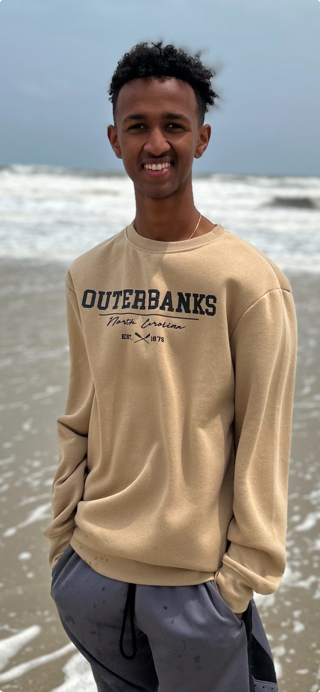
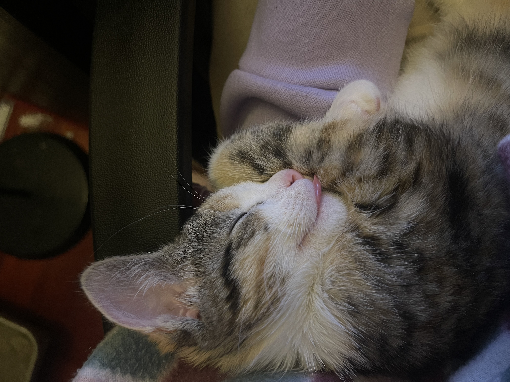
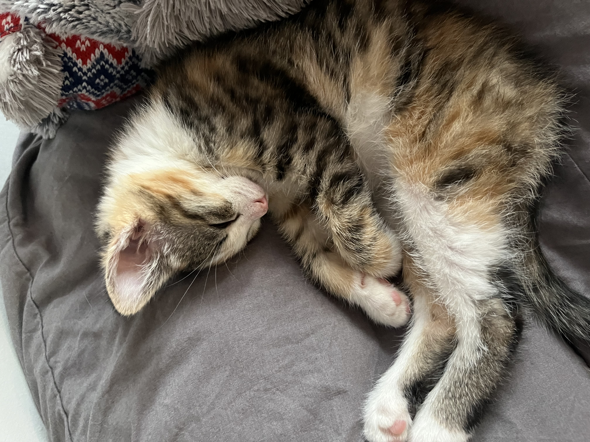
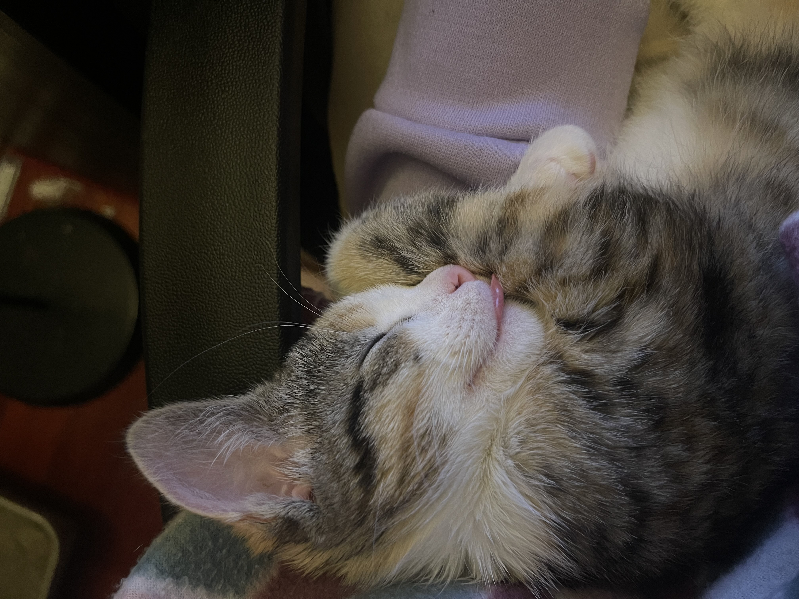
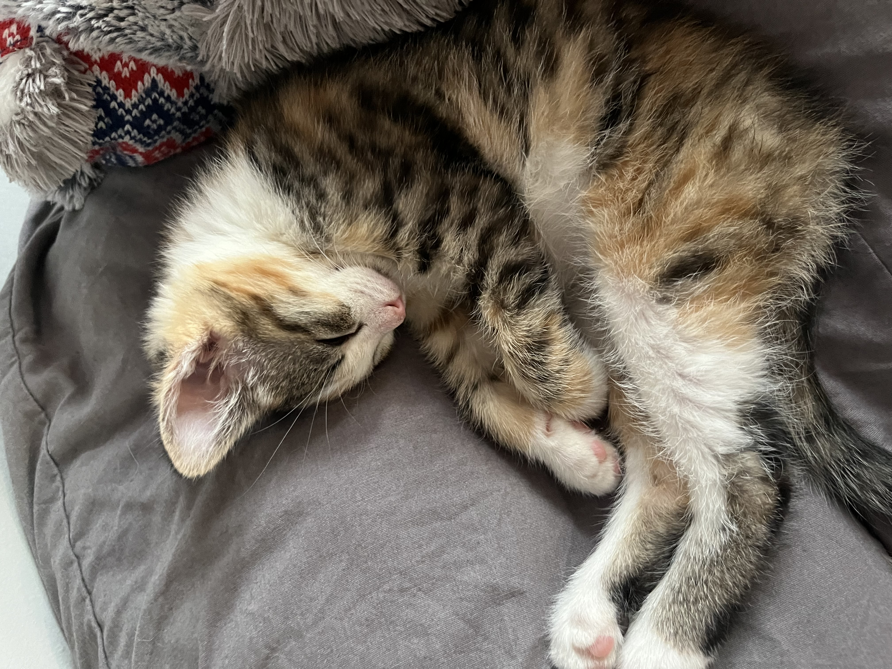

Who Am I?
Hi! My name is Dawit Kasy, and I am a freshmen at Quinnipiac University studying Computer Science.
Education
I completed my high school education at Mountain Mission School in 2023,
and I am curently enrolled at Quinnipiac University, where I anticipate graduating in 2027.
Why did I choose Computer Science?
With how involved technology is in everyday use, I was always extremely curious to learn how it worked.
I wanted learn how computers turn a bunch of 1's and 0's into the incredible applications we all use today, and
apply what I learn be able to build something I would want to use.
Experience
I currently, have about one school year's
worth of experience learning in the Java programming language. I have experience with Object Oriented Programming principles
and certain data structures such as Lists, Stacks, and Queues.



Interests
Some of my hobbies include gaming. Below are some of my favorite games of all time.


Here are some pictures of my family's cat
 


